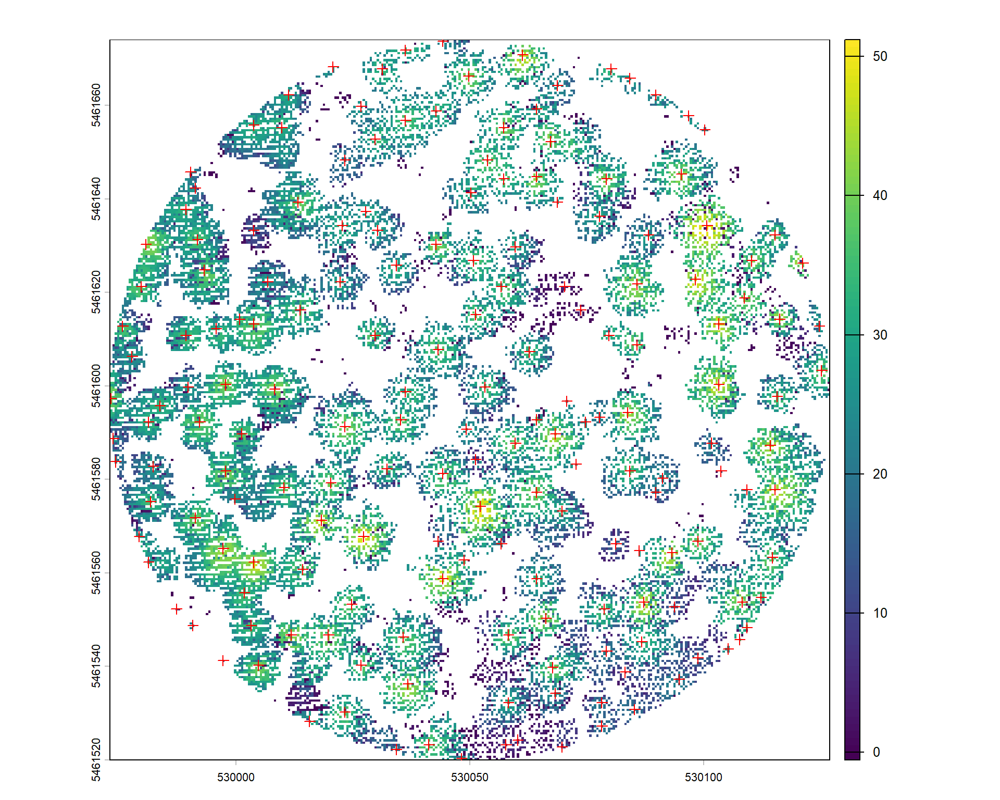

Coursework
2 | Individual Tree Detection with LiDAR
2.1 | LiDAR Sample Plot Extraction
In this lab, I explored the process of individual tree segmentation using LiDAR data. One general method is the Canopy Height Model (CHM), which detects individual trees based on 2D CHM information. The first step is LiDAR plot extraction and pre-processing. Circular sample plots with a radius of 77 m were clipped around pre-defined coordinates, and outliers below 0 m and above 65 m were removed. This process prepares clean, plot-level LiDAR datasets for tree detection and segmentation, though no trees are identified at this stage.
*The color gradient represents elevation (e.g. blue for low points, green for mid canopy and yellow/red for high canopy).
Code Snippets
# Define plot radius
radius <- 77
# For loop to extract plots
for(i in 1:nrow(plot_table)){
plot_id <- plot_table$Plot_ID[i]
plot_las <- readLAS(paste0(data_path, "Plots/Plot_", plot_id, ".las"),
filter = "-drop_z_below 0 -drop_z_above 65")
las_clip <- clip_circle(plot_las, plot_table$X[i], plot_table$Y[i], radius)
writeLAS(las_clip, paste0(data_path, "Plots/Plot_", plot_id, "_154m.las"))
print(paste("Plot", plot_id, "points:", npoints(las_clip)))
}2.2 | Plot 2 Tree Segmentation
A canopy height model (CHM) with a resolution of 2 m was generated from the normalized LiDAR point cloud. Tree tops were subsequently detected from the CHM using a local maximum filter. It identifies the highest pixel value as the treetop. These detected treetops were used as seed points for the Dalponte and Coomes (2016) algorithm, which segments individual tree crowns. In a nutshell, this algorithm identifies the full tree crown boundary.
*Each segmented tree is displayed using a unique color.
Code Snippets
# Create a CHM (Canopy Height Model) at 2 m resolution
chm_plot2_2 <- rasterize_canopy(plot2_norm, res = 2, p2r())
# Locate tree tops using the local maxima filter (lmf)
treetops_plot2_2 <- locate_trees(chm_plot2_2, lmf(ws = 5, hmin = 2))
# Segment trees using Dalponte2016 algorithm
Plot2_trees_CHM_2 <- segment_trees(plot2_norm, dalponte2016(chm = chm_plot2_2,
treetops = treetops_plot2_2,
th_tree = 2,
th_seed = 0.45,
th_cr = 0.55,
max_cr = 10)) 2.3 | Plot 2 Canopy Height Model with Detected Tree Tops
To make observations and analyses more intuitive, the treetops are displayed as a red cross in the figure below. They essentially represent the highest pixel values within a moving neighborhood, rather than necessarily being the highest pixels in the entire plot. The pros of the CHM-based approach include its computational efficiency compared to working with the full 3D point cloud, and its ease of use for treetop identification and tree crown formation. However, this approach would miss suppressed or understorey trees, since the CHM mainly represents the upper canopy surface. Small trees below dominant crowns might not be detected. In the same plot, I also tested the CHM with a coarser resolution (e.g. 4 and 10 metres). However, tree top detection and segmentation became inaccurate and unreliable.
*The color bar on the right indicates tree height.
Code Snippets
# Convert tree tops to SpatialPoints
treetops_sp_2_2 <- as(treetops_plot2_2, "Spatial")
# Base CHM plot
plot(chm_plot2_2)
# Overlay SpatialPoints
plot(treetops_sp_2_2, add = TRUE, col = "red", pch = 3)